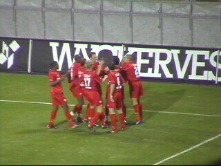
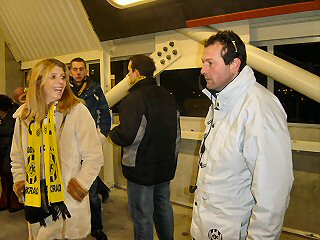
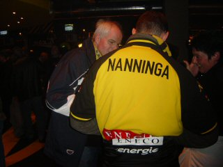

|
Roda JC - FC Twente (2-1) 8 november 2003 |

Van der Weerden kopt 0-1 binnen uit een vrije
trap (15').
Feest bij de 200 meegereisde Tukkers.
Sergio gaat voor de vlakte.
Uit een corner van Sergio kopt Senden de 1-1
in de touwen ( 25').
L*O*V*E
Nog geen minuut later lijkt Sonko 2-1 te scoren.
De goal wordt echter afgekeurd door Temmink.
RML-treffen in de pauze....

Een heel belangrijke steward ;-)
In de 88e min. heeft Anastasiou de winnende
treffer binnengekopt. De 2-1 wordt uitbundig
gevierd.
Roda ontsnapte vanavond aan een puntendeling.
Twente had in de tweede helft een overwicht,
maar wist de kansen niet te benutten.
In de omloop ontmoeten we dit stuk
huisvlijt. Op de rugzijde prijkt een 13.
In de KO is het weer erg gezellig.

Dick was ook daar.
Wachten op de samenvatting.
Ffff raden..... Schaesberg????
Geen beste wedstrijd vanavond maar de punten
zijn binnen en Roda staat op een 5e plaats!